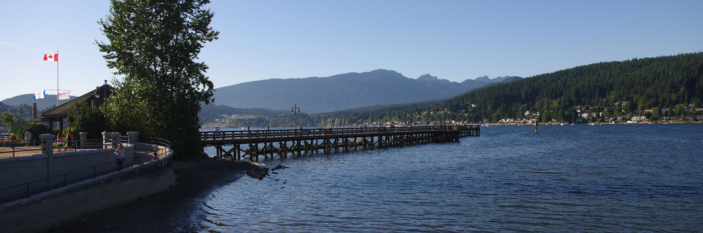
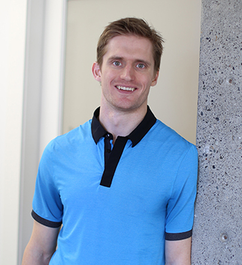

Dr. Mason Shore, DC

Dr. Mason Shore attended the University of Victoria for 4 years in the Department of Chemistry before pursuing his Doctor of Chiropractic at the Canadian Memorial Chiropractic College in Toronto. After graduating in 2011 he moved back to the Vancouver area to begin his practice. Dr. Shore focuses in the diagnosis and conservative treatment of neuromusculoskeletal conditions in all areas of the body. He takes a very functional and holistic approach to health and believes in communicating with the patient while including them in their own individualized treatment plan.
Being well-versed in different soft tissue techniques (myofascial release, Graston Technique®), adjustment styles and rehabilitation allows uniqueness to all treatment plans. Dr. Shore believes that injury can be successfully treated as well as prevented in the future which helps improve the quality of life for the patient. In addition to maintaining a general family practice where he treats patients of all ages and lifestyles, he has a special interest in athletic injuries and enjoys working with patients to get them back to being game-ready.
Dr. Shore believes that the best way to achieve overall health and wellness is through a collaborative team of health care providers. Rocky Point Wellness promotes this synergistic approach which allows for an individualized treatment plan that focuses on all areas of wellness.
Dr. Shore grew up playing hockey and competing in Karate and so sport and exercise was a big part of his life. Those values continue to this day and played a large part of the decision to become a Chiropractor. Being a true believer in the importance of an active lifestyle and movement Dr. Shore tries to do something active every day whether it is doing a Crossfit class, golfing or walking his dog Patrick.